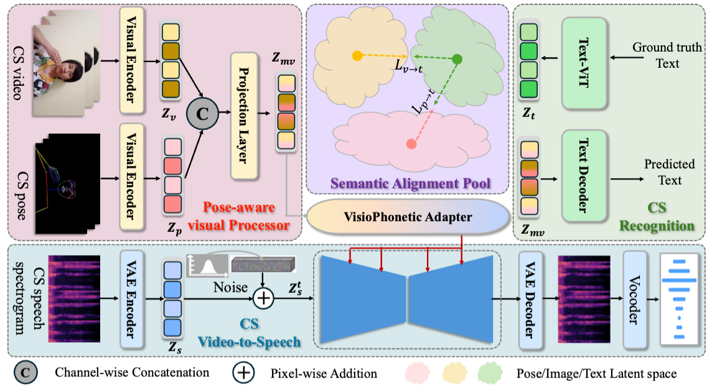

UniCUE: Unified Recognition and Generation Framework for Chinese Cued Speech Video-to-Speech Generation
Anonymous authors
Abstract: Cued Speech (CS) enhances lipreading by incorporating hand coding, thereby assisting hearing-impaired individuals in better perceiving spoken language. The CS Video-to-Speech (CSV2S) task aims to convert CS videos directly into intelligible speech. While existing approaches typically adopt a two-stage pipeline—first performing CS Recognition (CSR) followed by text-to-speech synthesis—this strategy often suffers from error accumulation and semantic misalignment. To address these issues, we propose UniCUE, the first unified framework for directly generating speech from CS videos. UniCUE seamlessly integrates CSR to extract fine-grained visual-semantic cues that enable more accurate and fluent speech synthesis. Its core components include a pose-aware visual processor for capturing detailed lip-hand visual signals, a semantic alignment pool for precise visual-to-semantic mapping, and a VisioPhonetic adapter to facilitate cross-task representation fusion. Extensive experiments on our newly collected Chinese CS dataset demonstrate that UniCUE significantly outperforms existing methods, establishing a new state-of-the-art in the CSV2S task.
UniCUE Framework
